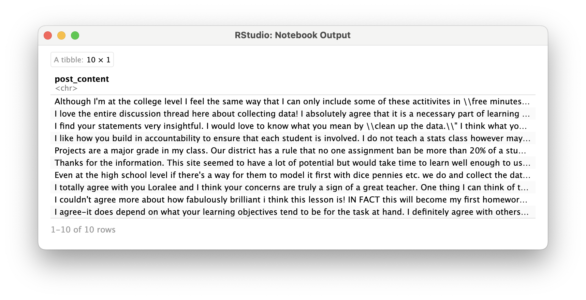
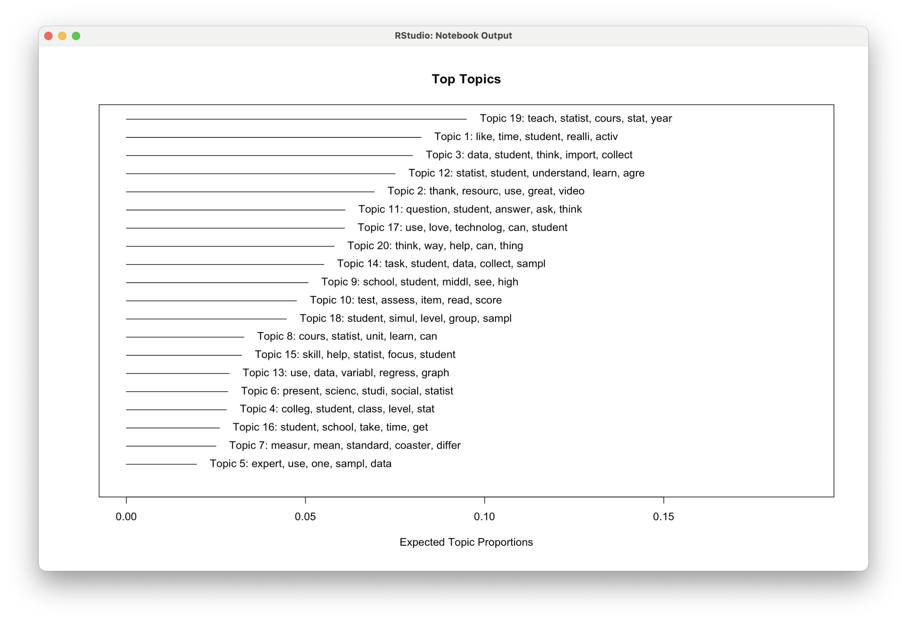
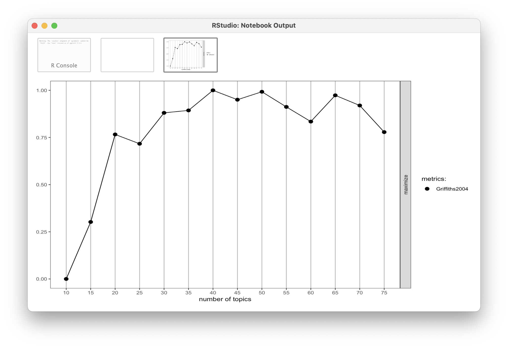
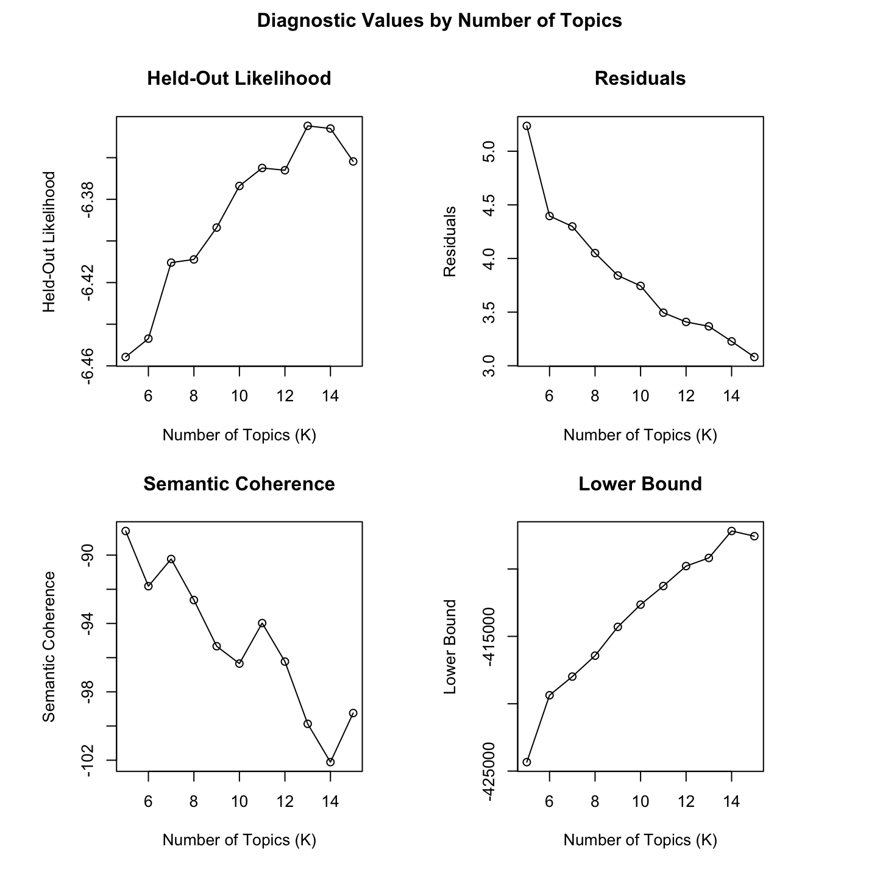

# YOUR CODE HERETopic Modeling in MOOC-Eds
TM Module 3: Case Study
0. INTRODUCTION
The Module 3 case study extends previous research and evaluation work by myself and some of my colleagues at the Friday Institute for Educational Innovation at North Carolina State University. In addition to many other areas of inquiry, our work was aimed at understanding and improving peer interaction and discussion in the Friday Institute’s Massively Open Online Courses for Educators (MOOC-Ed) and Online Professional Learning programs. To learn more about these courses and programs, visit: https://place.fi.ncsu.edu
Case Study Focus
Our focus this week will be on identifying “topics” by examining how words cohere into different latent, or hidden, “themes” based on patterns of co-occurrence of words within documents. With a bit of tongue-in-cheek, Meeks and Weingart (2012) describe topic modeling as:
…focused on corpora and not individual texts, treating the works themselves as unceremonious ‘buckets of words,’ and providing seductive but obscure results in the forms of easily interpreted (and manipulated) ‘topics’…. To achieve its results, it leverages occult statistical methods like ‘dirichlet priors’ and ‘bayesian models.’
That being said, Weingart also noted that “a topic model is a”clever and exceptionally versatile little algorithm that can be customized to all sorts of applications” and Bail (2020) added that topic modeling can be “a powerful tool for identifying general trends in a corpus that can then be analyzed in a more granular manner using other techniques” such as more traditional qualitative methods.
With respect to the actual R workflow of applying topic models to documents and text of interests, Silge & Robinson Silge and Robinson (2017) added a new bottom row their flowchart consisting of three new terms, including new data structures (i.e., a corpus object and document-term matrix) and the Latent Dirichlet Allocation (LDA) model:

This week will be also be our first introduction to the “Model” process of the data-intensive workflow described in our course text, Learning Analytics Goes to School. As noted by Krumm and Means Krumm, Means, and Bienkowski (2018), this workflow is not always a linear process and there is often a great deal of iteration that occurs within and between wrangling, exploring, and modeling. As illustrated by our workflow below, this week we will primarily explore our data after the modeling process in order to gain some additional insight into the topics generated by our model.
More specifically, our Module 3 case study covers the following concepts and skills:
- Prepare: Prior to analysis, we’ll take a quick look at some of the related MOOC-Ed research and evaluation work to gain some context for our analysis. This should aid in the interpretation of our results and help guide decisions as we tidy, model, and visualize our data.
- Wrangle: In section 2 we again revisit the process of tidying and tokenizing text using the {tidytext} package, but we also introduce the
stmpackage. This package makes use of the {tm} text mining package to preprocess text and will also be our first introduction to word “stemming.” - Model: We next take a look at two different approaches to topic modeling: Latent Dirichlet Allocation (LDA) and Structural Topic Modeling (STM) via the {stm} package. STM is very similar to LDA but can use metadata about documents to improve the assignment of words to “topics” in a corpus by examine relationships between topics and other variables.
- Explore: Finally, we further explore the results of our topic model using several handy functions from the {topicmodels} and {stm} packages, including the
findThoughtsfunction for viewing documents assigned to a given topic and thetoLDAvisfunction for visually exploring topics and word distributions.
1. PREPARE
To help us better understand the context, questions, and data sources we’ll be using in Module 3, this section will focus on the following topics:
- Context. As context for our analysis this week, we’ll review several related papers by myself and some of my current and former colleagues relevant to our analysis of MOOC-Ed discussion forums.
- Questions. We’ll also examine what insight topic modeling can provide to a question that we asked participants to answer in their professional learning teams (PLTs).
- Project Setup. This should be very familiar by now, but we’ll also learn about load the required packages for the topic modeling case study.
1a. Context
Participating in a MOOC and Professional Learning Team: How a Blended Approach to Professional Development Makes a Difference

Full text: https://www.learntechlib.org/p/195234/
Abstract
Massive Open Online Courses for Educators (MOOC-Eds) provide opportunities for using research-based learning and teaching practices, along with new technological tools and facilitation approaches for delivering quality online professional development. The Teaching Statistics Through Data Investigations MOOC-Ed was built for preparing teachers in pedagogy for teaching statistics, and it has been offered to participants from around the world. During 2016-2017, professional learning teams (PLTs) were formed from a subset of MOOC-Ed participants. These teams met several times to share and discuss their learning and experiences. This study focused on examining the ways that a blended approach to professional development may result in similar or different patterns of engagement to those who only participate in a large-scale online course. Results show the benefits of a blended learning environment for retention, engagement with course materials, and connectedness within the online community of learners in an online professional development on teaching statistics. The findings suggest the use of self-forming autonomous PLTs for supporting a deeper and more comprehensive experience with self-directed online professional developments such as MOOCs. Other online professional development courses, such as MOOCs, may benefit from purposely suggesting and advertising, and perhaps facilitating, the formation of small face-to-face or virtual PLTs who commit to engage in learning together.
Data Source & Analysis
All peer interaction, including peer discussion, take place within discussion forums of MOOC-Eds, which are hosted using the Moodle Learning Management System. To build the dataset you’ll be using for this case study, I wrote a query for Moodle’s MySQL database, which records participants’ user-logs of activity in the online forums. This sql query combines separate database tables containing postings and comments including participant IDs, timestamps, discussion text and other attributes or “metadata.”
For further description of the forums and data retrieval process, see also the following papers:
Kellogg, S., & Edelmann, A. (2015). Massively Open Online Course for Educators (MOOC‐Ed) network dataset. British journal of educational technology, 46(5), 977-983.
Ezen-Can, A., Boyer, K. E., Kellogg, S., & Booth, S. (2015, March). Unsupervised modeling for understanding MOOC discussion forums: a learning analytics approach. In Proceedings of the fifth international conference on learning analytics and knowledge (pp. 146-150).
Kellogg, S., Booth, S., & Oliver, K. (2014). A social network perspective on peer supported learning in MOOCs for educators. International Review of Research in Open and Distributed Learning, 15(5), 263-289.
Also, for a more recent paper on topic modeling in MOOC-Eds, see:
- Barker, H. A., Lee, H. S., Kellogg, S., & Anderson, R. (2024). The Viability of Topic Modeling to Identify Participant Motivations for Enrolling in Online Professional Development. Online Learning, 28(1), 175-195. Retrieved from: https://files.eric.ed.gov/fulltext/EJ1418006.pdf
Summary of Key Findings
The following highlight some key findings related to the discussion forums in the papers cited above:
- MOOCs designed specifically for K-12 teachers can provide positive self-directed learning experiences and rich engagement in discussion forums that help form online communities for educators.
- Analysis of discussion forum data in TSDI provided a very clear picture of how enthusiastic many PLT members and leaders were to talk to others in the online community. They posed their questions and shared ideas with others about teaching statistics throughout the units, even though they were also meeting synchronously several times with their colleagues in small group PLTs.
- Findings on knowledge construction demonstrated that over half of the discussions in both courses moved beyond sharing information and statements of agreement and entered a process of dissonance, negotiation and co-construction of knowledge, but seldom moved beyond this phase in which new knowledge was tested or applied. These findings echo similar research on difficulties in promoting knowledge construction in online settings.
- Topic modeling provides more interpretable and cohesive models for discussion forums than other popular unsupervised modeling techniques such as k-means and k-medoids clustering algorithms.
- The unsupervised approach to topic modeling (LDA) provides some general insight into the distribution of topics across large data sets but requires manual interpretation to determine meaningful themes.
1b. Guiding Questions
For the paper, Participating in a MOOC and Professional Learning Team: How a Blended Approach to Professional Development Makes a Difference, we were interested in unpacking how participants who enrolled in the Teaching Statistics through Data Investigations MOOC-Ed might benefit from also being in a smaller group of professionals committed to engaging in the same professional development. Our specific research question for this paper was:
What are the similarities and differences between how PLT members and Non-PLT online participants engage and meet course goals in a MOOC-Ed designed for educators in secondary and collegiate settings?
Dr. Hollylynne Lee and the TSDI team also developed a facilitation guide designed specifically for PLT teams to help groups synthesize the ideas in the course and make plans for how to implement new strategies in their classroom in order to impact students’ learning of statistics. One question PLT members were asked to address was:
What ideas or issues emerged in the discussion forums this past week?
For this case study, we will further examine that question through the use of topic modeling.
And just to reiterate yet again from Module 1, one overarching question we’ll explore throughout this course, and that Silge and Robinson (2018) identify as a central question to text mining and natural language processing, is:
How do we to quantify what a document or collection of documents is about?
1c. Load Libraries
In addition to the use of the {tidyverse} and {tidytext} packages for text mining, we’ll make use of several specialized R packages facilitate topic modeling, visualization, and result interpretation.
Below is a brief introduction to key packages commonly used in the topic modeling diagram shared earlier:
1. Text Preprocessing
- SnowballC: Provides stemming capabilities to reduce words to their root forms, improving consistency in topic modeling.
2. Topic Modeling Algorithms
topicmodels: Implements Latent Dirichlet Allocation (LDA) and Correlated Topic Models (CTM) for extracting topics from text data.
stm: Extends LDA by incorporating document metadata (e.g., time, author, demographic variables), allowing for more context-aware topic modeling.
3. Model Selection & Optimization
- ldatuning: Helps determine the optimal number of topics for LDA models using various evaluation metrics.
4. Visualization & Interpretation
- LDAvis: provides an interactive visualization tool for exploring LDA topic distributions and word associations.
üëâ Your Turn ‚§µ
Use the code chunk below to load all of the packages highlighted above, including the {tidyverse} and {tidytext} packages:
2. WRANGLE
As noted previously, data wrangling involves some combination of cleaning, reshaping, transforming, and merging data (Wickham, Çetinkaya-Rundel, and Grolemund 2023). This week we’ll revisit tidying and tokenizing text using the {tidytext} package, but are also introduced to the the {stm} package. This package makes use of {tm} text mining package to preprocess text (e.g., removing punctuation, stop words, etc.) and will also be our first introduction to word stemming.
- Import Data. We’ll be working with .csv files this week and the
read_csv()function and will revisit the argument for changing column types. - Cast a DTM. We’ll also revisit the {tidytext} package to “tidy” and tokenize our forum data and introduce the
cast_dtm()function to create the document term matrix (dtm) need for topic modeling. - To Stem or not to STEM? We conclude our data wrangling by also introducing the
textProcessor()function for preprocessing and discuss the pros and cons of word stemming.
2a. Import Forum Data
To get started, we need to import, or “read”, our data into R. The function used to import your data will depend on the file format of the data you are trying to import. First, however, check your Files tab in RStudio to verify that there is indeed file named ts_forum_data.csv in your data folder.
Now let’s read our data into our Environment using the read_csv() function and assign it to a variable named ts_forum_data so we can work with it like any other object in R.
ts_forum_data <- read_csv("data/ts_forum_data.csv",
col_types = cols(course_id = col_character(),
forum_id = col_character(),
discussion_id = col_character(),
post_id = col_character()
)
)By default, many of the columns like course_id and forum_id are read in as numeric data. For our purposes, we plan to treat them as unique identifiers or names for out courses, forums, discussions, and posts. The read_csv() function has a handy col_types = argument changing the column types from numeric to characters.
üëâ Your Turn ‚§µ
Use the code chunk below to inspect the data frame you just imported using a function of your choosing:
#YOUR CODE HEREIn this case study, we are exploring the use of topic modeling to analyze online discussions in an online course for educators. One critical step in preparing data for analysis is creating a codebook, which serves as a reference document that defines each variable in a dataset, including its meaning, format, and potential values.
In the table, provide a short description for each variable based on what you think the values for each column represent. The fist one has been completed for you:
| Variable Name | Short Description |
|---|---|
| course_id | A unique identifier for the course. |
| course_name | YOUR DESCRIPTION HERE |
| forum_id | YOUR DESCRIPTION HERE |
| forum_name | YOUR DESCRIPTION HERE |
| discussion_id | YOUR DESCRIPTION HERE |
| discussion_name | YOUR DESCRIPTION HERE |
| discussion_creator | YOUR DESCRIPTION HERE |
| discussion_poster | YOUR DESCRIPTION HERE |
| discussion_reference | YOUR DESCRIPTION HERE |
| parent_id | YOUR DESCRIPTION HERE |
| post_date | YOUR DESCRIPTION HERE |
| post_id | YOUR DESCRIPTION HERE |
| post_title | YOUR DESCRIPTION HERE |
| post_content | YOUR DESCRIPTION HERE |
2b. Cast a Document Term Matrix
In this section we’ll revisit some familiar tidytext functions used in Modules 1 & 2 for tidying and tokenizing text and introduce some new functions from the {stm} package for processing text and transforming our data frames into new data structures required for topic modeling.
Functions Used
tidytext functions
unnest_tokens()splits a column into tokensanti_join()returns all rows from x without a match in y and used to removestop wordsfrom out data.cast_dtm()takes a tidied data frame take and “casts” it into a document-term matrix (dtm)
dplyr functions
count()lets you quickly count the unique values of one or more variablesgroup_by()takes a data frame and one or more variables to group bysummarise()creates a summary of data using arguments like sum and mean
stm functions
textProcessor()takes in a vector or column of raw texts and performs text processing like removing punctuation and word stemming.prepDocuments()performs several corpus manipulations including removing words and renumbering word indices
Tidying Text
Prior to topic modeling, we have a few remaining steps to tidy our text that hopefully should feel familiar by this point. If you recall from Chapter 1 of Text Mining With R, these preprocessing steps include:
- Transforming our text into “tokens”
- Removing unnecessary characters, punctuation, and whitespace
- Converting all text to lowercase
- Removing stop words such as “the”, “of”, and “to”
Let’s tokenize our forum text and by using the familiar unnest_tokens() and remove stop words per usual:
forums_tidy <- ts_forum_data |>
unnest_tokens(output = word, input = post_content) |>
anti_join(stop_words, by = "word")
forums_tidyNow let’s do a quick word count to see some of the most common words used throughout the forums. This should get a sense of what we’re working with and later we’ll need these word counts for creating our document term matrix for topic modeling:
forums_tidy |>
count(word, sort = TRUE)Terms like “students,” “data,” and “class” are about what we would have expected from a course teaching statistics. The term “agree” and “time” however, are not so intuitive and worth a quick look as well.
üëâ Your Turn ‚§µ
Use the filter() and grepl() functions introduced in Module 1. Section 3b to filter for rows in our ts_forum_data data frame that contain a term or terms of your choosing. Select a random sample of 10 posts using the sample_n() function for your term(s) and answer the questions below.
Your output should look something like this:

❓Questions
What, if anything, do these posts have in common?
- YOUR RESPONSE HERE
What topics or themes might be apparent, or do you anticipate emerging, from our topic modeling?
- YOUR RESPONSE HERE
Creating a Document Term Matrix
As highlighted in Chapter 5 of Text Mining with R, the {topicmodels} package and the Latent Dirichlet allocation (LDA) algorithm and LDA() function it uses expects document-term matrix as the data input.
Before we create a our document-term matrix, however, we have an important decision to make:
What do we consider to be a “document” in a MOOC-Ed discussion forum?
For example, we could consider each individual discussion post, or post_id in our data frame, as a document. It might also make sense to combine texts from all posts within each discussion, or disccussion_id, and consider that as our “document” since these posts are often interconnected an build off one another. For now, however, let treat each individual post as a unique document.
To create our document term matrix, we’ll need to first count() how many times each word occurs in each document, or post_id in our case, like so:
forums_tidy |>
count(post_id, word) |>
arrange(desc(n))Once we have created a count of each word contained in a document, we next create a “tidy” matrix that contains one row per post as our original data frame did, but now contains a column for each word in the entire corpus and a value of n for how many times that word occurs in each post.
Let’s create this document term matrix from our post counts, we’ll use the cast_dtm() function and assign it to the variable forums_dtm:
forums_dtm <- forums_tidy |>
count(post_id, word) |>
cast_dtm(post_id, word, n)üëâ Your Turn ‚§µ
Use the code chunk below to print the forums_dtm object in the console and answer the questions below:
# YOUR CODE HERETake a look at our forums_dtm object in the console and answer the following question:
- What “class” of object is
forums_dtm?- YOUR RESPONSE HERE
- How many unique documents and terms are included our matrix?
- YOUR RESPONSE HERE
- Why might there be fewer documents/posts than were in our original data frame?
- YOUR RESPONSE HERE
- What exactly is meant by “sparsity”?
- YOUR RESPONSE HERE
2c. To Stem or not to Stem?
Next we’ll need to prepare our original data set for structural topic modeling using the textProcessor() function. The {stm} package has a number of features that extend the functionality of the topicmodels package, including an argument for “stemming” words, which Schofield and Mimno (2016) describe as follows:
Stemming is a popular way to reduce the size of a vocabulary in natural language tasks by conflating words with related meanings. Specifically, stemming aims to convert words with the same “stem” or root (e.g “creative” and “creator”) to a single word type (“create”). Though originally developed in the context of information retrieval (IR) systems, stemmers are now commonly used as a preprocessing step in unsupervised machine learning tasks.
The rationale behind stemming is that it can dramatically reduce the number of words or terms to be modeled, which in theory should help simplify and improve the performance of your model. We’ll explore this assumption a little later in this section.
Processing and Stemming for STM
Like unnest_tokens(), the textProcessor() function includes several useful arguments for processing text like converting text to lowercase and removing punctuation and numbers. I’ve included several of these in the script below along with their defaults used if you do not explicitly specify in your function. Most of these are pretty intuitive and you can learn more by viewing the ?textProcessor documentation.
Let’s go ahead and process our discussion forum post_content in preparation for our structural topic modeling that we’ll introduce later:
temp <- textProcessor(ts_forum_data$post_content,
metadata = ts_forum_data,
lowercase=TRUE,
removestopwords=TRUE,
removenumbers=TRUE,
removepunctuation=TRUE,
wordLengths=c(3,Inf),
stem=TRUE,
onlycharacter= FALSE,
striphtml=TRUE,
customstopwords=NULL)Note that the first argument the textProcessor function expects is the column in our data frame that contains the text to be processed, in our case it’s the column post_content, which is extracted from ts_forum_data the using the $ operator.
The second argument metadata = expects the data frame that contains the text of interest and uses the column names to label the metadata such as course ids and forum names. This meatdata can be used to to improve the assignment of words to topics in a corpus and examine the relationship between topics and various covariates of interest.
Unlike the unnest_tokens() function, the output is not a nice tidy data frame. Topic modeling using the {stm} package requires a very unique set of inputs that are specific to the package. The following code will pull elements from the temp list that was created, which will be required for the stm() function we’ll use in Section 4:
meta <- temp$meta
vocab <- temp$vocab
docs <- temp$documentsStemming Tidy Text
Notice that the textProcessor stem argument we used above is set to TRUE by default. We haven’t introduced word stemming at this point because there is some debate about the actual value of this process. Words like “students” and “student” might make sense to collapse into their base word and actually make analyses and visualizations more concise and easier to interpret. Hvitfeldt and Silge (2021) note, however, that words like the following have dramatic differences in meaning, semantics, and use and could result in poor models or misinterpreted results:
- meaning and mean
- likely, like, liking
- university and universe
The first word pair is particularly relevant to discussion posts from our Teaching Statistics course data. In addition, collapsing words like “teachers” and “teaching” could dramatically alter the results from a topic model.
Schofield and Mimno (2016) specifically noted that:
Despite their frequent use in topic modeling, we find that stemmers produce no meaningful improvement in likelihood and coherence and in fact can degrade topic stability.
For now, we will leave as is the forums_dtm we created earlier with words unstemmed, but what if we wanted to stem words in a “tidy” way?
Since the unnest_tokens() function does not (intentionally I believe) include a stemming function, one approach would be to use the wordStem() function from the snowballC package to either replace our words column with a word stems or create a new variable called stem with our stemmed words using the mutate() function.
Let’s do the latter and take a look at the original words and the stem that was produced:
stemmed_forums <- ts_forum_data |>
unnest_tokens(output = word, input = post_content) |>
anti_join(stop_words, by = "word") |>
mutate(stem = wordStem(word))
stemmed_forumsYou can see that words like “activity” and “activities” that occur frequently in our discussions have been reduced to the word stem “activ”. If you are interested in learning other approaches for word stemming in R, as well as reading a more in depth description of the stemming process, I highly recommend the Chapter 4 Stemming from Hvitfeldt and Silge (2021) book, Supervised Machine Learning for Text Analysis in R.
üëâ Your Turn ‚§µ
Complete the following code using what we learned in the section on Creating a Document Term Matrix and answer the questions below:
Hint: Make sure your code includes stem counts rather than word counts.
stemmed_dtm <- ts_forum_data |>
unnest_tokens(output = word, input = post_content) |>
anti_join(stop_words, by = "word") |>
mutate(stem = wordStem(word)) |>
______() |>
______() |>
stemmed_dtmLet’s also take a quick look at our word counts for our stemmed corpus using a tidytext approach:
stem_counts <- ts_forum_data |>
unnest_tokens(output = word, input = post_content) |>
anti_join(stop_words, by = "word") |>
mutate(stem = wordStem(word)) |>
count(stem, sort = TRUE)
stem_counts❓Questions
- How many fewer terms are in our stemmed document term matrix?
- YOUR RESPONSE HERE
- Which words were clearly stemmed? Provide 3 examples:
- EXAMPLE 1
- EXAMPLE 2
- EXAMPLE 3
- Did stemming words significantly reduce the sparsity of the network?
- YOUR RESPONSE HERE
3. MODEL
This module provides our first opportunity (VADER aside) for modeling text as data. In very simple terms, modeling involves developing a mathematical summary of a dataset. These summaries can help us further explore trends and patterns in our data.
In their book, Learning Analytics Goes to School, Krumm and Means (2018) describe two general types of modeling approaches used in the Data-Intensive Research workflow: unsupervised and supervised machine learning. In distinguishing between the two, they note:
Unsupervised learning algorithms can be used to understand the structure of one’s dataset. Supervised models, on the other hand, help to quantify relationships between features and a known outcome. Known outcomes are also commonly referred to as labels or dependent variables.
In Section 3 we focus on Topic Modeling, an unsupervised learning approach to automatically identify topics in a collection of documents. In fact, we’ll explore two different approaches to topic modeling, as well as strategies for identifying the “right” number of topics:
- Fitting a Topic Modeling with LDA. In this section we learn to use the {topicmodels} package and associated
LDA()function for unsupervised classification of our forum discussions to find natural groupings of words, or topics. - Fitting a Structural Topic Model. We then explore the use of the {stm} package and
stm()function to fit our model and uses metadata about documents to improve the assignment of words to “topics” in a corpus. - Choosing K. Finally, we wrap up Section 3 by learning about diagnostic properties like exclusivity, semantic coherence, and heldout likelihood for helping to select an appropriate number of topics.
3a. Fitting a Topic Modeling with LDA
Before running our first topic model using the LDA() function, let’s quick recap from our readings some basic principles behind Latent Dirichlet Allocation and why LDA is of preferred over other automatic classification or clustering approaches.
Unlike simple forms of cluster analysis such as k-means clustering, LDA is a “mixture” model, which in our context means that:
- Every document contains a mixture of topics. Unlike algorithms like k-means, LDA treats each document as a mixture of topics, which allows documents to “overlap” each other in terms of content, rather than being separated into discrete groups. So in practice, this means that a discussion forum post could have an estimated topic proportion of 70% for Topic 1 (e.g. be mostly about a Topic 1), but also be partly about Topic 2.
- Every topic contains a mixture of words. For example, if we specified in our LDA model just 2 topics for our discussion posts, we might find that one topic seems to be about pedagogy while another is about learning. The most common words in the pedagogy topic might be “teacher”, “strategies”, and “instruction”, while the learning topic may be made up of words like “understanding” and “students”. However, words can be shared between topics and words like “statistics” or “assessment” might appear in both equally.
Similar to k-means other other simple clustering approaches, however, LDA does require us to specify beforehand a value for k, i.e., the number of topics in our corpus. Selecting k is no trivial matter and can greatly impact your results.
Since we don’t have a have strong rationale about the number of topics that might exist in discussion forums, let’s use the n_distinct() function from the dplyr package to find the number of unique forum names in our course data and use that as a starting point:
n_distinct(ts_forum_data$forum_name)Since it looks like there are 20 distinct discussion forums, we’ll use that as our value for the k = argument of the LDA(). Be patient while this runs, since the default setting of is to perform a large number of iterations.
n_distinct(ts_forum_data$forum_name)
forums_lda <- LDA(forums_dtm,
k = 20,
control = list(seed = 588)
)
forums_ldaNote that we used the control = argument to pass a random number (588) to seed the assignment of topics to each word in our corpus. Since LDA is a stochastic algorithm that could have different results depending on where the algorithm starts, specified a seed for reproducibility and so we’re all seeing the same results every time we specify the same number of topics.
By default, the LDA() function uses the method = “VEM” (Variational Expectation Maximization) estimation method, which is generally faster and more scalable. However, there is “Gibbs” (Gibbs Sampling) method, which is more accurate but computationally intensive, as well as the “CTM” (Correlated Topic Model) method, a variation of LDA with correlated topics.
Finally, tying back to our work in Module 1, Chris Bail (2020) notes that topic assignments for each word are updated in an iterative fashion and that LDA employs the Term Frequency-Inverse Document Frequency (TF-IDF) metric to assign probabilities.
Viewing Topic Terms
Before moving on, let’s view the top 5 words in each topic using the dead simple terms() function. We’ll also send this to the as_tibble() function to make the output a little easier to read:
terms(forums_lda, 5) |>
as_tibble()üëâ Your Turn ‚§µ
Use the code chunk below to increase the number of terms associated with each “Topic” and answer the prompt that follows:
# YOUR CODE HEREAs you can see form the output, each “Topic” is essentially a “bag-of-words” that typically occur together across documents. Pick two topics from the table above and use a short phrase or sentence that you think describes the topic.
TOPIC X: YOUR DESCRIPTION HERE
TOPIC X: YOUR DESCRIPTION HERE
3b. Fitting a Structural Topic Model
Bail notes that LDA, while perhaps the most common approach to topic modeling, is just one of many different types, including Dynamic Topic Models, Correlated Topic Models, Hierarchical Topic Models, and more recently, Structural Topic Modeling (STM). He argues that one reason STM has risen in popularity and use is that it employs meta data about documents to improve the assignment of words to topics in a corpus and can be used to examine relationships between covariates and documents.
Also, since Julia Silge has indicated that STM is, “my current favorite implementation of topic modeling in R” and has built supports in the tidytext package for building structural topic models, this package definitely is worth discussing in this case study. I also highly recommend her own case study of the stm package: The game is afoot! Topic modeling of Sherlock Holmes stories as well as her follow up post, Training, evaluating, and interpreting topic models.
Note
LLM-Based Approaches to Topic Modeling
Large Language Models (LLMs), such as GPT-4, BERT, and T5, which leverage deep learning and contextual embeddings, have also emerged as promising approaches for modeling topics within a corpus. Unlike traditional Latent Dirichlet Allocation (LDA), LLM-based topic modeling approaches and libraries such as {BERTopic} use pre-trained transformers, embeddings, and clustering techniques to extract meaningful topics.
The stm Package
As we’ve seen above, STM produced an unusual temp textProcessor output that is unique to the stm package. And as you’ve probably already guessed, the stm() function for fitting a structural topic model does not take a fairly standard document term matrix like the LDA() function.
Before we fit our model, we’ll have to extract the elements from the temp object created after we processed our text. Specifically, the stm() function expects the following arguments:
documents =the document term matrix to be modeled in the native stm formatdata =an optional data frame containing meta data for the prevalence and/or content covariates to include in the modelvocab =a character vector specifying the words in the corpus in the order of the vocab indices in documents.
Let’s go ahead and extract these elements:
docs <- temp$documents
meta <- temp$meta
vocab <- temp$vocab And now use these elements to fit the model using the same number of topics for K that we specified for our LDA topic model. Let’s also take advantage of the fact that we can include the course_id and forum_id covariates in the prevealence = argument to help improve, in theory, our model fit:
forums_stm <- stm(documents=docs,
data=meta,
vocab=vocab,
prevalence =~ course_id + forum_id,
K=20,
max.em.its=25,
verbose = FALSE)
forums_stmAs noted earlier, the stm package has a number of handy features. One of these is the plot.STM() function for viewing the most probable words assigned to each topic.
By default, it only shows the first 3 terms so let’s change that to 5 to help with interpretation:
plot.STM(forums_stm, n = 5)Note that you can also just use the base R plot() function as well:
plot(forums_stm, n = 5)You should see an output that looks something like the image below:

Let’s break down what we’re seeing:
Title: “Top Topics”
- This indicates that the visualization represents the most prominent topics identified by the STM model.
Topic Labels and Keywords
Each topic is listed as
Topic X(e.g.,Topic 19,Topic 1, etc.), followed by its most representative words.The words are stemmed (e.g., statist → statistics, cours → course), indicating preprocessing steps such as stemming or lemmatization.
The keywords reflect the semantic content, or “signature,” of each topic and provide a snapshot of what each topic represents.
Horizontal Bars
Each horizontal bar represents the expected topic proportion, i.e., how prevalent each topic is in the corpus, i.e., our entire body of posts.
The longer the bar, the more dominant the topic is across documents.
X-Axis: “Expected Topic Proportions”
This represents the proportion of the dataset that each topic occupies.
Topics with higher proportions are more frequently discussed in the corpus.
üëâ Your Turn ‚§µ
Fit a model for both LDA and STM using different values for K and answer the questions below:
# YOUR CODE HERE- What topics appear to be similar to those using 20 topics for K?
- YOUR RESPONSE HERE
- Knowing that you don’t have as much context as I do, how might you interpret one of these latent topics or themes using the key terms assigned?
- YOUR RESPONSE HERE
- What topic emerged that seem dramatically different and how might you interpret this topic?
- YOUR RESPONSE HERE
3c. Finding K
As alluded to earlier, selecting the number of topics for your model is a non-trivial decision and can dramatically impact your results. Bail (2018) notes that
The results of topic models should not be over-interpreted unless the researcher has strong theoretical apriori about the number of topics in a given corpus, or if the researcher has carefully validated the results of a topic model using both the quantitative and qualitative techniques described above.
There are several approaches to estimating a value for K and we’ll take a quick look at one from the ldatuning package and one from our stm package.
The FindTopicsNumber() Function
The {ldatuning} package has functions for both calculating and plotting different metrics that can be used to estimate the most preferable number of topics for LDA model. It also conveniently takes the standard document term matrix object that we created from out tidy text and has the added benefit of running fairly quickly, especially compared to the function for finding K from the {stm} package.
Let’s use the defaults specified in the ?FindTopicNumber documentation and modify slightly get metrics for a sequence of topics from 10-75 counting by 5 and plot the output we saved using the FindTopicsNumber_plot() function:
k_metrics <- FindTopicsNumber(
forums_dtm,
topics = seq(10, 75, by = 5),
metrics = "Griffiths2004",
method = "Gibbs",
control = list(),
mc.cores = NA,
return_models = FALSE,
verbose = FALSE,
libpath = NULL
)
FindTopicsNumber_plot(k_metrics)Note that the FindTopicNumbers() function contains three additional metrics for calculating metrics that can be used to estimate the most preferable number of topics for LDA model. We used the Griffiths2004 metrics included in the default example and I’ve also found this to produce the most interpretable results as show in the figure below:

As a general rule of thumb and overly simplistic heuristic, we’re looking for an inflection point in our plot which indicates an optimal number of topics to select for a value of K.
The findingK() Function
Finally, Bail (2018) notes that thestm package has a useful function called searchK which allows us to specify a range of values for k and outputs multiple goodness-of-fit measures that are “very useful in identifying a range of values for k that provide the best fit for the data.”
The syntax of this function is very similar to the stm() function we used above, except that we specify a range for k as one of the arguments. In the code below, we search all values of k between 10 and 30.
findingk <- searchK(docs,
vocab,
K = c(5:15),
data = meta,
verbose=FALSE)
plot(findingk)
Warning
Computationally Intensive!
Note that running the searchK() function on this corpus took all night on a pretty powerful MacBook Pro and crashed once as well, so I do not expect you to run this for the case study.
After a couple iterations searchK() landed on between 5 and 15 with an optimal number of topics somewhere around 14:

Given the somewhat conflicting results – also somewhat selfishly and for the same of simplicity for this case study – I’m just going to stick with the rather arbitrary selection of 20 topics for the remainder of this case study.
The LDAvis Explorer
One final tool that I want to introduce from the stm package is the toLDAvis() function which provides a great visualizations for exploring topic and word distributions using LDAvis topic browser:
toLDAvis(mod = forums_stm, docs = docs)As you can see from the browser screen shot below, our current STM with 20 topics is resulting in a lot of overlap among topics and suggest that 20 may not be an optimal number of topics, as other approaches for finding k also suggests:

4. EXPLORE
Silge and Robinson (2018) note that fitting at topic model is the “easy part.” The hard part is making sense of the model results and that the rest of the analysis involves exploring and interpreting the model using a variety of approaches which we’ll case study in in this section.
Bail (2018) cautions, however, that:
…post-hoc interpretation of topic models is rather dangerous… and can quickly come to resemble the process of “reading tea leaves,” or finding meaning in patterns that are in fact quite arbitrary or even random.
4a. Exploring Beta Values
Hidden within this forums_lda topic model object we created are per-topic-per-word probabilities, called β (“beta”). It is the probability of a term (word) belonging to a topic.
Let’s take a look again at the 5 most likely terms assigned to each topic, i.e. those with the largest β values using the terms() function from the topicmodels package:
terms(forums_lda, 5)Even though we’ve somewhat arbitrarily selected the number of topics for our corpus, some these topics or themes are fairly intuitive to interpret. For example:
Topic 11 (technology, students, software, program, excel) seems to be about students use of technology including software programs like excel;
Topic 9 (questions, kids, love, gapminder, sharing) seems to be about the gapminder activity from the MOOC-Ed and kids enjoyment of it; and
Topic 18 (data, students, collect, real, sets) seems to be about student collection and use of real world data sets.
Not surprisingly, the tidytext package has a handy function conveniently name tidy() to convert our LDA model to a tidy data frame containing these beta values for each term:
tidy_lda <- tidy(forums_lda)
tidy_ldaObviously, it’s not very easy to interpret what the topics are about from a data frame like this so let’s borrow code again from Chapter 8.4.3 Interpreting the topic model in Text Mining with R to examine the top 5 terms for each topic and then look at this information visually:
top_terms <- tidy_lda |>
group_by(topic) |>
slice_max(beta, n = 5, with_ties = FALSE) |>
ungroup() |>
arrange(topic, -beta)
top_terms |>
mutate(term = reorder_within(term, beta, topic)) |>
group_by(topic, term) |>
arrange(desc(beta)) |>
ungroup() |>
ggplot(aes(beta, term, fill = as.factor(topic))) +
geom_col(show.legend = FALSE) +
scale_y_reordered() +
labs(title = "Top 5 terms in each LDA topic",
x = expression(beta), y = NULL) +
facet_wrap(~ topic, ncol = 4, scales = "free")4b. Exploring Gamma Values
Now that we have a sense of the most common words associated with each topic, let’s take a look at the topic prevalence in our MOOC-Ed discussion forum corpus, including the words that contribute to each topic we examined above.
Also, hidden within our forums_lda topic model object we created are per-document-per-topic probabilities, called γ (“gamma”). This provides the probabilities that each document is generated from each topic, that gamma matrix. We can combine our beta and gamma values to understand the topic prevalence in our corpus, and which words contribute to each topic.
To do this, we’re going to again borrow some code from the Silge (2018) post, Training, evaluating, and interpreting topic models.
First, let’s create two tidy data frames for our beta and gamma values
td_beta <- tidy(forums_lda)
td_gamma <- tidy(forums_lda, matrix = "gamma")
td_beta
td_gammaNext, we’ll adopt Julia’s code wholesale to create a filtered data frame of our top_terms, join this to a new data frame for gamma-terms and create a nice clean table using the kabel() function knitr package:
top_terms <- td_beta |>
arrange(beta) |>
group_by(topic) |>
top_n(7, beta) |>
arrange(-beta) |>
select(topic, term) |>
summarise(terms = list(term)) |>
mutate(terms = map(terms, paste, collapse = ", ")) |>
unnest()
gamma_terms <- td_gamma |>
group_by(topic) |>
summarise(gamma = mean(gamma)) |>
arrange(desc(gamma)) |>
left_join(top_terms, by = "topic") |>
mutate(topic = paste0("Topic ", topic),
topic = reorder(topic, gamma))
gamma_terms |>
select(topic, gamma, terms) |>
kable(digits = 3,
col.names = c("Topic", "Expected topic proportion", "Top 7 terms"))And let’s also compare this to the most prevalent topics and terms from our forums_stm model that we created using the plot() function:
plot(forums_stm, n = 7)4c. Reading the Tea Leaves
Recognizing that topic modeling is best used as a “tool for reading” and provides only an incomplete answer to our overarching, “How do we quantify what a corpus is about?”, the results do suggest some potential topics that have emerged, as well as some areas worth following up on.
Specifically, looking at some of the common clusters of words for the more prevalent topics suggest that some key topics or “latent themes” (renamed in bold) might include:
- Teaching Statistics: Unsurprising, given the course title, the topics most prevalent in both the
forums_stmandforums_ldamodels contains the terms “teach”, “students”, “statistics”. This could be an “overarching theme” but more likely may simply just be residue from the course title being sprinkled throughout the forums and deserves some follow up. Topics 8 from the LDA model may overlap with this topic as well. - Course Utility: The second most prevalent Topics (13 and 2) in the
ldaandstmmodels respectively, seem to potentially be about the usefulness of course “resources” like lessons, tools, videos, and activities. I’m wagering this might be a forum dedicated to course feedback. Topic 15 from the STM model also suggest this may be a broader theme. - Using Real-World Data: Topics 18 & 12 from the LDA model particularly intrigued me and I’m wagering this is pretty positive sentiment among participants about the value and benefit of having students collect and analyze real data sets (e.g. Census data in Topic 1) and work on projects relevant to their real life. Will definitely follow up on this one.
- Technology Use: Several topics (6 & 11 from LDA and 8 & 19 from STM) appear to be about student use of technology and software like calculators and Excel for teaching statistics and using simulations. Topic 16 from LDA also suggest the use of the Common Online Data Analysis Platform (CODAP).
- Student Struggle & Engagement: Topic 15 from LDA and Topic 16 from STM also intrigue me and appear to be two opposite sides of perhaps the same coin. The former includes “struggle” and “reading” which suggests perhaps a barrier to teaching statistics while Topic 16 contains top stems like “engage”, “activ”, and “think” and may suggest participants anticipate activities may engage students.
To serve as a check on my tea leaf reading, I’m going to follow Bail’s recommendation to examine some of these topics qualitatively. The stm package has another useful (though exceptionally fussy) function called findThoughts which extracts passages from documents within the corpus associate with topics that you specify.
The first line of code may not be necessary for your independent analysis, but because the textProcessor() function removed several documents during processing, the findthoughts() function can’t properly index the processed docs. This line of code found on stackoverflow removes documents from original ts_forum_data source that were removed during processing so there is a one-to-one correspondence with forums_stm and so you can use the function to find posts associated with a given topic.
Let’s slightly reduce our original data set to match our STM model, pass both to the findThoughts() function, and set our arguments to return n =10 posts from topics = 2 (i.e. Topic 2) that have at least 50% or thresh = 0.5 as a minimum threshold for the estimated topic proportion.
ts_forum_data_reduced <-ts_forum_data$post_content[-temp$docs.removed]
findThoughts(forums_stm,
texts = ts_forum_data_reduced,
topics = 2,
n = 10,
thresh = 0.5)Duplicate posts aside, this Course Utility topic returns posts there were expected based on my interpretation of the key terms for Topic 2. It looks like I may have read those tea leaves correctly!
Now let’s take a look at Topic 16 that we thought might be related to student engagement:
findThoughts(forums_stm,
texts = ts_forum_data_reduced,
topics = 16,
n = 10,
thresh = 0.5)It looks like my tea reading was a partially correct for Topic 16, though the results seem to be about a specific “Pepsi challenge” activity conducted with students.
Finally, let’s look at posts from Topic 3 which we though might be an overarching theme about teaching statistics:
ts_forum_data_reduced <-ts_forum_data$post_content[-temp$docs.removed]
findThoughts(forums_stm,
texts = ts_forum_data_reduced,
topics = 3,
n = 10,
thresh = 0.5)Looking at just the 10 posts returned, perhaps a better name for this topic would be Course Reflections on Teaching Statistics.
Key Takeaways
In addition to some useful R packages and functions for the actual process of topic modeling, hopefully there are two main lessons I’m hoping you take away from this case study:
- Topic modeling requires a lot of decisions. Beyond deciding on a value for K, there are a number of key decisions that you have to make that can dramatically affect your results. For example, to stem or not to stem? What qualifies as a document? What flavor of topic modeling is best suited to your data and research questions? How many iterations should you run?
- Topic modeling is as much art as (data) science. As Bail (2018) noted, the term “topic” is somewhat ambitious, and topic models do not produce highly nuanced classification of texts. Once you’ve fit your model, interpreting your model requires some mental gymnastics and ideally some knowledge of the context from which the data came to help with interpretation of your topics. Moreover, the quantitative approaches for making the decisions highlighted above are imperfect and a good deal of human judgment required.
üëâ Your Turn ‚§µ
Using the STM model you fit in Section 3 with a different value for K, use the approaches demonstrated in Section 4 to explore and interpret your topics and terms and answer the question below.
# YOUR CODE HERE5. COMMUNICATE
Recall that the final(ish) step in our workflow/process is sharing the results of analysis with wider audience. Krumm et al. (2018) outlined the following 3-step process for communicating with education stakeholders what you have learned through analysis:
- Select. Communicating what one has learned involves selecting among those analyses that are most important and most useful to an intended audience, as well as selecting a form for displaying that information, such as a graph or table in static or interactive form, i.e. a “data product.”
- Polish. After creating initial versions of data products, research teams often spend time refining or polishing them, by adding or editing titles, labels, and notations and by working with colors and shapes to highlight key points.
- Narrate. Writing a narrative to accompany the data products involves, at a minimum, pairing a data product with its related research question, describing how best to interpret the data product, and explaining the ways in which the data product helps answer the research question.
In this case study, we focused applying some fairly standard topic modeling approaches to help us understand topics that emerged in online discussion forums as part of a online course for statistics educators. Specifically, we made our very first attempt at fitting both LDA and STM topic models to identify the key words .
For this case study, let’s focus on returning to our research question and communicating our findings to the MOOC-Ed team:
What topics emerged in the discussion forums?
üëâ Your Turn ‚§µ
Imagine that your are part of the MOOC-Ed research team responsible for communicating your work to the instructional developers and course facilitators on the team. Based on the analyses conducted in Sections 3 & 4, write a brief summary for three key findings from our topic modeling that you think would be interesting and potentially actionable for the team.
KEY FINDING
KEY FINDING
KEY FINDING
Congratulations!
You’ve completed the Module 3 Case Study: Topic Modeling in MOOC-Eds. To “turn in” your work, you can click the “Render” icon in the menu bar above. This will create a HTML report in your Files pane that serves as a record of your completed assignment and that can be opened in a browser or shared on the web.
References
Krumm, Andrew, Barbara Means, and Marie Bienkowski. 2018. Learning Analytics Goes to School. Routledge. https://doi.org/10.4324/9781315650722.
Silge, Julia, and David Robinson. 2017. Text Mining with r: A Tidy Approach. " O’Reilly Media, Inc.". https://www.tidytextmining.com.
Wickham, Hadley, Mine Çetinkaya-Rundel, and Garrett Grolemund. 2023. R for Data Science. " O’Reilly Media, Inc.". https://r4ds.hadley.nz.